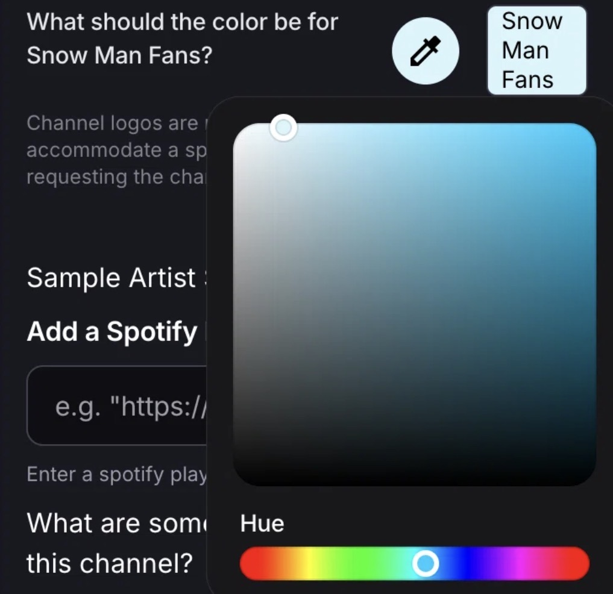

SNOW MAN × STATIONHEAD
Snow Manファンチャンネル申請 📮
StationheadのFan Channel申請を、できるだけ少ない操作で入力できるようにする補助ツールです。
はじめに
このツールでできること
最初の1回だけ「申請ボタン」をブックマークとして設定します。
2回目からはStationheadの申請ページでそのブックマークを実行すると、
ID・メール・申請理由・Spotifyプレイリスト・Station一覧など、入力できる項目をまとめて補助します。
入力前に用意するもの
・Stationhead ID
・Stationhead登録時に使っているメールアドレス
・申請理由（用意された3つから選ぶか、自分で文章を登録できます）
・Stationhead ID
・Stationhead登録時に使っているメールアドレス
・申請理由（用意された3つから選ぶか、自分で文章を登録できます）
⚠️ 個人情報について
作成する申請ボタンには、入力したStationhead IDとメールアドレスが組み込まれます。 コピーしたコードやブックマークのアドレス / URLは、他の人に送ったり公開したりしないでください。
作成する申請ボタンには、入力したStationhead IDとメールアドレスが組み込まれます。 コピーしたコードやブックマークのアドレス / URLは、他の人に送ったり公開したりしないでください。
Xから開いた方へ
Safari / Chromeで開いてください
Xのアプリ内ブラウザでは、ブックマークを作れないことがあります。 X内ブラウザの「…」メニューから 「Safariで開く」「Chromeで開く」「ブラウザで開く」 などを選んでから設定してください。
最初の1回だけ
申請ボタンを設定する
設定ページでは、iPhone / iPad・Androidそれぞれの画像つき手順を見ながら進められます。 ブックマークを使ったことがない方向けの「ゆっくり説明」と、慣れている方向けの「最短手順」があります。
設定後
使い方は3ステップ
1
Stationheadの申請ページを開く
申請フォームを表示した状態にします。
2
登録した「Snow Manファンチャンネル申請」を実行
iPhone / iPadはSafariのブックマークから、 AndroidはChromeのアドレスバーから★付きブックマークを選びます。
3
内容を確認してSubmit
申請理由を選ぶと入力が始まります。 「Stationを追加しています」が消えるまでは画面を触らず待ち、 最後にフォーム内容を確認してSubmit Requestを押します。
うまくいかないとき
FAQ
当てはまるものだけ開いて確認してください。
Xから開いたら、ブックマークを作れません
Xのアプリ内ブラウザではなく、Safari / Chromeで開き直してください。
X内ブラウザの「…」メニューから
「Safariで開く」「Chromeで開く」「ブラウザで開く」
などを選びます。
ブックマークを押しても、設定ページが開くだけです
ブックマークのアドレス / URL欄が申請ボタンのコードに置き換わっていない可能性があります。
設定ページで「あなた専用の申請ボタンをコピー」→ 保存済みブックマークを編集 → 名前ではなくアドレス / URL欄を全部消して貼り直してください。
設定ページで「あなた専用の申請ボタンをコピー」→ 保存済みブックマークを編集 → 名前ではなくアドレス / URL欄を全部消して貼り直してください。
ブックマークを実行しても何も起きません
Stationheadの申請ページを開いた状態で実行してください。
iPhone / iPad：Safariのブックマークから「Snow Manファンチャンネル申請」をタップ。
Android：Chromeのアドレスバーに「Snow Manファンチャンネル申請」と入力し、 候補の★付きブックマークを選びます。
それでも動かない場合は、設定ページから申請ボタンを再コピーし、 ブックマークのアドレス / URL欄を貼り直してください。
iPhone / iPad：Safariのブックマークから「Snow Manファンチャンネル申請」をタップ。
Android：Chromeのアドレスバーに「Snow Manファンチャンネル申請」と入力し、 候補の★付きブックマークを選びます。
それでも動かない場合は、設定ページから申請ボタンを再コピーし、 ブックマークのアドレス / URL欄を貼り直してください。
「申請理由を選んでください」が出ません
自分で書いた申請理由を登録している場合は正常です。
その場合は3択を出さず、登録した文章でそのまま入力が始まります。
自作理由を登録していないのに出ない場合は、 ブックマークのアドレス / URL欄が正しく貼り替わっているか確認してください。
自作理由を登録していないのに出ない場合は、 ブックマークのアドレス / URL欄が正しく貼り替わっているか確認してください。
Androidでブックマーク編集後の「保存」が見つかりません
Android版Chromeでは「保存」ボタンがない場合があります。
URL欄に申請ボタンを貼り付けたら、そのまま元の画面へ戻って大丈夫です。
Stationが途中までしか追加されません / 1局だけ抜けます
「Stationを追加しています」表示が消えるまでは、画面を触らず待ってください。
現在の申請ボタンは、1局ずつ追加できたことを確認してから次へ進みます。 確認できない場合は、そのStation名を示すメッセージが出ます。
最後に以下の7局が入っているか確認してください。
snowmanfan9sima / snowmandream / chochan6969 / whatsolike / sn9support / snowman9flash / snowind
現在の申請ボタンは、1局ずつ追加できたことを確認してから次へ進みます。 確認できない場合は、そのStation名を示すメッセージが出ます。
最後に以下の7局が入っているか確認してください。
snowmanfan9sima / snowmandream / chochan6969 / whatsolike / sn9support / snowman9flash / snowind
Fan Channelのカラーはどう設定すればいいですか？
カラーは申請ボタンでは自動入力できないため、Stationheadのフォームで必ず手動設定します。
「What should the color be for Snow Man Fans?」のスポイトをタップし、 ライトブルー #d6f4ff に近い色を選んでください。
「What should the color be for Snow Man Fans?」のスポイトをタップし、 ライトブルー #d6f4ff に近い色を選んでください。

完了メッセージが出ました。もうSubmitしていいですか？
まだそのまま送信せず、フォームを一度確認してください。
確認するもの：
・Stationhead ID
・メールアドレス
・申請理由
・Spotifyプレイリスト
・7局のStation
・Fan Channelのカラー
カラーは自動入力されないため、必ず手動で設定してください。 目安はライトブルーの #d6f4ff です。
すべて確認できたらSubmit Requestを押します。
確認するもの：
・Stationhead ID
・メールアドレス
・申請理由
・Spotifyプレイリスト
・7局のStation
・Fan Channelのカラー
カラーは自動入力されないため、必ず手動で設定してください。 目安はライトブルーの #d6f4ff です。
すべて確認できたらSubmit Requestを押します。
メールアドレスはどれを入れればいいですか？
Stationheadの登録時に使っているメールアドレスを入力してください。
ID・メール・自作の申請理由をあとから変更したいです
ブックマーク自体を作り直す必要はありません。
設定ページで新しい内容を入力 → 「あなた専用の申請ボタンをコピー」→ 保存済みブックマークのアドレス / URL欄を新しいコードに貼り替えれば更新できます。
設定ページで新しい内容を入力 → 「あなた専用の申請ボタンをコピー」→ 保存済みブックマークのアドレス / URL欄を新しいコードに貼り替えれば更新できます。
3つの申請理由の英文を先に確認したいです
設定ページの「申請理由に入る文章を見る」から確認できます。
例文を使う場合は申請時に3つから選べます。
自分で書く場合は自由入力欄に登録できます。